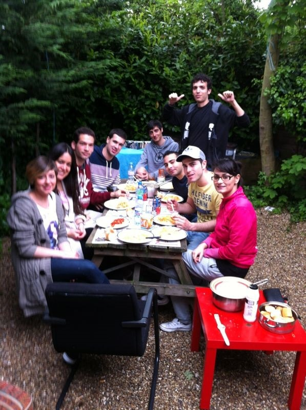
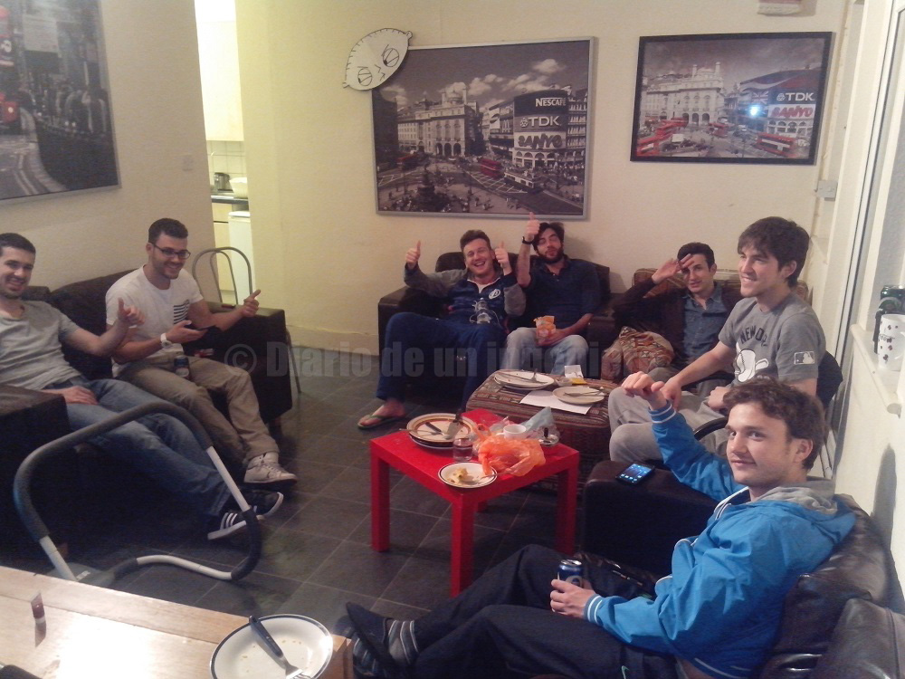
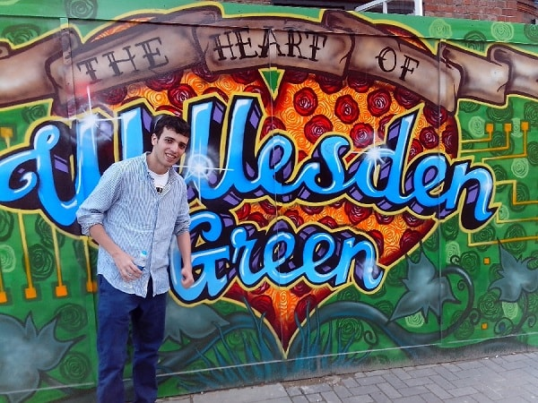
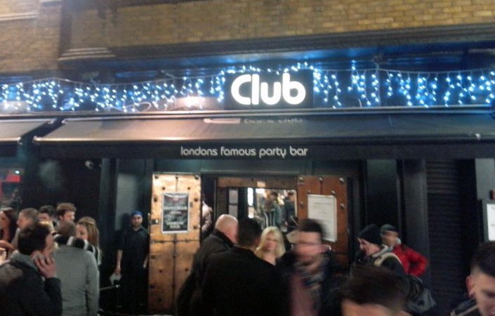
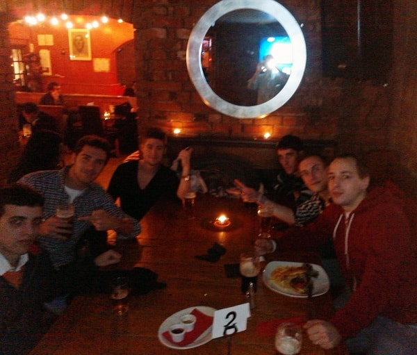
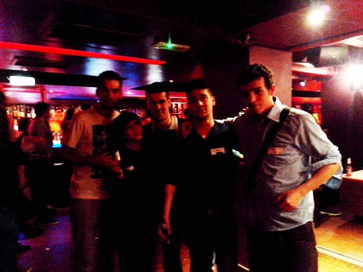

Un 19 de Febrero del años 2012, aterrice en Londres, una ciudad demasiado grande para lo que estaba acostumbrado a ver. Ya la había ojeado bastante en google-maps y había estudiado donde me convendría ir a vivir teniendo en cuenta que me iba a inscribir en un centro de aprendizaje de inglés que no me iba a costar un céntimo.
Elegí la zona noroeste del centro de Londres, zona A. Cerca de EadwagetRoad.
Nada más llegar a Londres antes de tomar el bus que me iba a llevar el centro tuve que preguntar dónde estaba la plataforma de buses y ahí me di cuenta de que mi ingles distaba mucho de un inglés básico para hablar, confundiendo la planta base con la de abajo y perdiendo el bus que tenía asignado. Si bien luego no pasó nada y me dejaron ir en el siguiente bus.

El barrio donde estaba mi hostal estaba lleno de mercadillos y bazares, pareciendo más cualquier ciudad de India que una ciudad europea. Estando a unos cientos de
metros de las calles principales de Londres y a unos metros de la calle más famosa de los Beatles era un poco difícil de creer.
Había bastante bullicio de gente y bastante decadencia. Muchos establecimientos de comida rápida, que si bien no eran de marcas conocidas como McDonald’s, ofrecían precios bastante mejores Y las hamburguesas o aquello que ofrecían parecía en principio más sano incluso.
Estuve buscando un sitio para vivir en aquel hostal y tras tres días de búsqueda y de no entenderme bien con los ingleses que alquilaban al precio que buscaba me metí en una casa llena de gente de Europa que estaba en las mismas que yo.
Buscar un trabajo y aprender inglés. En aquel entonces era el boom de la emigración española y se vio como a medida que iba pasando el tiempo la casa pasaba de tener una proporción de italianos y de franceses superior a ser más de la mitad españoles en la casa.
Mi casa estaba en WillesdenGreen, un barrio bastante tranquilo si no fuera por las fiestas que hacíamos en la casa.
El precio por habitación era desmesurado para estar lindando con zona 3 pero bueno, es lo que tiene la economía de mercado.
Sube la demanda, suben los precios. Y en Londres se llega al extremo de que muchos londinenses están vendiendo sus propiedades para comprar grandes terrenos y casas grandes en otras ciudades y no tener que preocuparse por trabajar nunca más.
De hecho salvo en el centro financiero de Londres, una proporción muy pequeña de ingleses habita esta enorme ciudad.

Una vez llegado a mi barrio lo primero que hice fue centrarme en mis cursos de inglés y en hacerme una cuenta bancaria.
Primeramente me iba a la biblioteca del barrio donde por 2 horas todos los días tenia cursos gratuitos de gramática y conversación.
Ahí conocí a bastante gente extranjera con la que poder compartir experiencias.
Después en mi rutina diaria comía y me iba derecho a Killburn donde me esperaban otras 4 horas de intensivo de inglés.
Y al volver a casa me iba a hacer deporte o a hablar inglés en el parque del barrio, Gladstone Park. Por la noche solía irme a dormir a la hora, si bien mi casa nunca dormía. Siempre había alguien haciendo algo a cualquier hora.
Era más que una casa un hostal pero el precio era de un hotel.
Los sábados iba a mi curso gratuito de 6 horas oficial en la misma línea de metro, Jubilee Line. Aun estando a 5 km no tardaba más de 15 minutos en llegar.
Es una locura lo bien que funciona el metro en Londres, todo está sincronizado y hay montones de vagones con lo que moverse resulta sencillo y rápido.
Eso sí, los precios del transporte son bastante altos y para alguien que cobra el salario mínimo ya suponen el 15% del beneficio neto mensual.
Si a eso sumas un 50% del sueldo en la vivienda y un 30% en comida, apenas te llegaría un 5% para vivir.
El sueldo mínimo es alrededor de 1100 libras mensuales, unos 1300 euros.
 Aun así hay gente que está dispuesta a trabajar a esos ratios, y de eso se sustenta en gran medida la gran Londres. Yo ya sabía bien lo que me convenía en aquel entonces, aprovechar el máximo tiempo a aprender la lengua y a aprender otras cosas más importantes.
La gente de la casa era bastante agradable y allí encontré gente bastante especial, que tenían la mente bastante abierta e iban a por todas.
Aun así hay gente que está dispuesta a trabajar a esos ratios, y de eso se sustenta en gran medida la gran Londres. Yo ya sabía bien lo que me convenía en aquel entonces, aprovechar el máximo tiempo a aprender la lengua y a aprender otras cosas más importantes.
La gente de la casa era bastante agradable y allí encontré gente bastante especial, que tenían la mente bastante abierta e iban a por todas.

En Londres los sitios para tomar algo no escasea, si bien a diferencia de cualquier ciudad española a partir de las 3 de la madrugada son pocos los sitios abiertos, y eso que
es la capital ya que en otras ciudades esta todo agotado incluso antes.
Yo solía ir a la zona centro a algunos bares para extranjeros como el famoso Zoo Bar y Bar Zebrano que celebraban además todos los miércoles encuentros para intercambiar idiomas y hablar inglés.
Había muchos ingleses más cosmopolitas que les gustaba siempre conocer a gente nueva y diferente.
Los sábados noche íbamos o al centro o algún barrio de la zona para tomar algo y volver a casa donde teníamos montada nuestra propia discoteca.
No fueron pocos los vecinos que llamaban a la policía y no fueron pocas las veces que la policía también amenizaba el lugar, o el propio dueño de la casa.
Si bien el dueño, propietario de otras 6 casas del barrio que se agenciaba según mis cálculos cerca de 30.000 libras semanales y debido al cobro en negro casi directos al bolsillo.


Poco tenía que perder ante una multa que podía suponer 2.500 libras y que se negaba a pagar si llegará el caso. Ya que los landlords ingleses se caracterizan por su carácter avaro y gañan.
Tenía un regimiento de matones que solían reportarle cualquier incidente a parte de unos filipinos que se encargaban de limpiar la casa de vez en cuando y de informarle de lo que hacíamos por la casa. Fue una buena experiencia de 5 meses donde aprendí bastante.
Además en cualquier barrio de la zona suele haber algún pub donde poder beber cerveza o cualquier otra cosa. La cerveza es la bebida favorita de los ingleses y también la
más barata ya que por 2 o 3 libras te puedes hacer con más de medio litro en un bar, y por 1 libra en cualquier bazar.
Allí están mucho más extendidas las latas de medio litro que las de 33cl. Y las media pintas apenas se ven aunque si te las puedes pedir, eso sí a un 33% inferior con lo que la pinta siempre sale más rentable.
© 2016 - All Rights Reserved - Diseñada por Sergio López Martínez
![[Valid RSS]](https://www.feedvalidator.org/images/valid-rss-rogers.png "Validate my RSS feed")